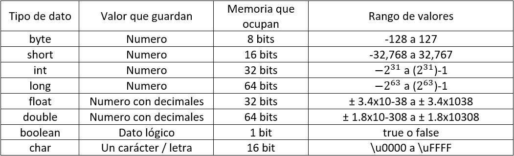
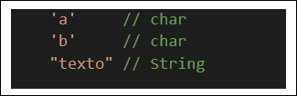

Tipos de datos
Existen muchos tipos de datos que define Java, y están clasificados en dos categorías: datos primitivos y los no-primitivos, Los primitivos son los definidos desde propio el lenguaje de programación (números, valores de cierto/falso, decimales, etc.) y los no-primitivos son tipos de datos no definidos por el lenguaje, sino por los programadores (cadenas de textos, vectores, enumeradores, clases, etc.). En este capítulo veremos solo los tipos de datos primitivos, y después cubriremos los datos no-primitivos en posteriores módulos.
Tipos de datos primitivos
Esta es una tabla con todos los datos primitivos de Java que iremos viendo uno a uno.
Como ves, unos tipos de datos representan valores de más grandes que otros, y por ende, requieren de más espacio en memoria, usar un tipo u otro dependerá del criterio del programador en cuanto a que tan grande es el dato va a utilizar.
Números enteros (byte, int, short y long)
Los números en Java pueden ser Enteros (integer) o con decimales (de punto flotante / float), los enteros puedes ser:
- byte
- short
- int
- long
Puedes ver en la tabla anterior que tan grande es el numero que pueden guardar, el más usado es el int (viene de “Integer”, entero en inglés) ya que maneja un rango muy amplio de valores y las computadoras modernas aguantan perfectamente este tipo de dato (pero si quieres optimizar tu programa al máximo, usa el tipo de dato acorde al valor que guardara).
Numero con decimales (float y double)
Los números con decimales utilizan los tipos float y double, float viene de la ingle “punto flotante”, almacenan una cantidad grande de valores y hasta 7 dígitos después del punto, para identificar a un número flotante, se necesita poner una f al final del número decimal (por ejemplo: 15.414f, 0.25f, 1.5f, etc). Double es como un float pero con más almacenaje y precisión (hasta 16-17 dígitos después del punto) y no requiere de un sufijo como si lo necesita un float. Sirven mucho en las divisiones y a pesar de ser números, los decimales no pueden almacenarse en variables de tipo de valor entero.
Dato de cierto/falso (boolean)
En los programas requeriremos valores que solo representen un estado, cierto o falso, si o no, encendido o apagado, para eso es el tipo boolean. Es tipo de valor más liviano (1 bit) y solo puede almacenar dos valores; true (“cierto” en inglés) o false (“falso” en inglés), no dejará guardar otro valor que no sea uno de esos dos y servirá mucho en futuro módulos donde veremos como tomar decisiones si cierto predicado o enunciado es “cierto” o si es “falso”.
Carácter o letra (char)
Un carácter es una letra con la configuración UTF-16, que es una forma de codificación de caracteres, puedes ver el código UTF-16 que corresponde a cada carácter o letra en este link Complete Character List for UTF-16 , para usar caracteres, tenemos que poner la letra entre comillas simples (‘ ‘). Los char realmente se usan comúnmente a la hora de analizar texto o sacar ciertos caracteres a las cadenas de las cadenas de texto (también llamadas String).
El tipo de dato String (cadena de caracteres) sirve para guardar texto, no solo un carácter y son muy utilizada en la programación (en vez de comillas simples, se utilizan comillas dobles (“ ”) para denotar las cadenas de texto); pero no son categorizadas como “variables primitivas” en Java, esto por ser un conjunto de variables tipo char (un carácter / letra), pero aprenderemos a usarlas más adelante.